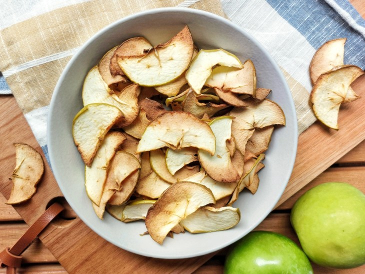
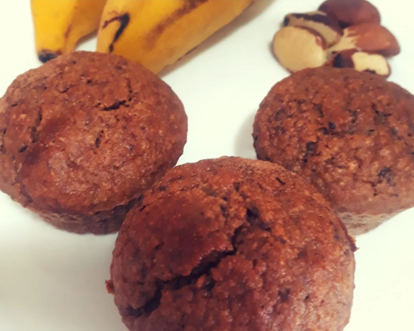
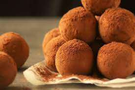

Descubra a praticidade de manter uma vida saudável
Chips de Maçã
INGREDIENTES 2 maçãs 1 colher de sopa de azeite de oliva ou óleo de coco MODO DE PREPARO Corte a maçã em rodelas finas. Em uma vasilha, coloque as maçã, polvlhe a quantidade de canela que desejar e acrescente o óleo. Após, misture bem. Você pode fazer na airfryer ou no forno convencional. Airfryer: distribua bem as maçãs no cesto, a 200 ºC por 20 minutos. Lembre-se de virar na metade do tempo. Forno: distribua bem as maçãs em uma assadeira, a 200 ºC por 60 minutos. Lembre-se de virar na metade do tempo.
Bolinho de Banana
Ingredientes 3/4 xícara de aveia em flocos 2 ovos 1 banana 4 castanhas do Pará 4 tâmaras 4 ameixas secas 2 colheres de sopa de óleo de coco 1/2 xícara de leite vegetal 1 colher de café de fermento Modo de preparo Bata no liquidificador a aveia, ovos, banana, óleo de coco, leite vegetal, tâmaras e metade das castanhas. Pique a outra metada da castanhas e toda ameixa, adicione a massa do liquidificador e por fim inclua o fermento e mexa devagar. Unte as forminhas de silicone com óleo de coco, preencha 3/4 de cada espaço com a massa e coloque no forno a 180 graus por 25-30 minutos. Rendimento: 6 bolinhos.
Trufa de Biomassa
Ingredientes: 1 xícara (chá) de biomassa de banana verde 🍌 2 colheres (sopa) de cacau em pó sem açúcar 🍫 2 colheres (sopa) de óleo de coco líquido 1 colher (chá) de essência de baunilha 4 colheres (sopa) de açúcar do coco - pode usar mascavo ou demerara Cacau em pó, granulado, lascas de amêndoa ou castanhas em pedacinhos para decorar Modo de preparo: Misture todos os ingredientes em uma panela em fogo baixo. Vá misturando e cozinhe até desgrudar do fundo da panela. Despeje em um prato e deixe esfriar na geladeira. Modele bolinhas e passe no chocolate granulado, cacau em pó, amêndoas ou castanha de caju para confeitar. Rende: 12 brigadeiros/trufas médias